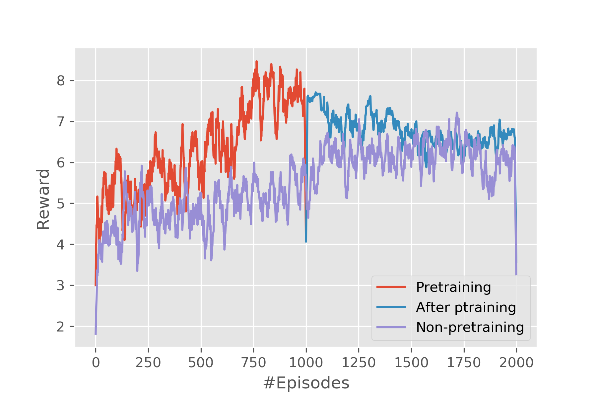
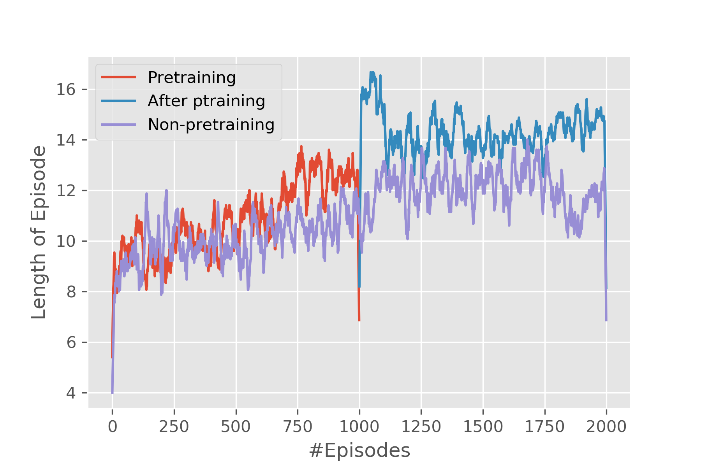
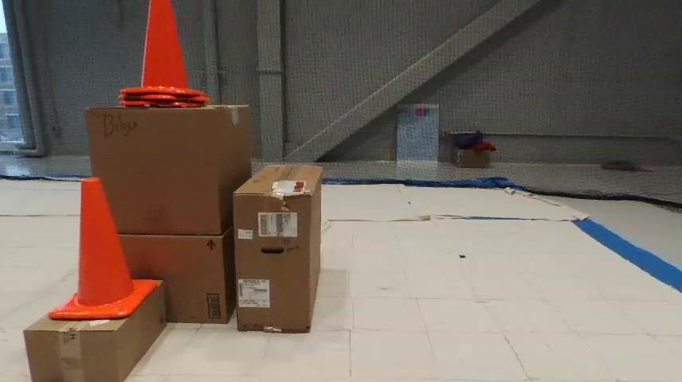
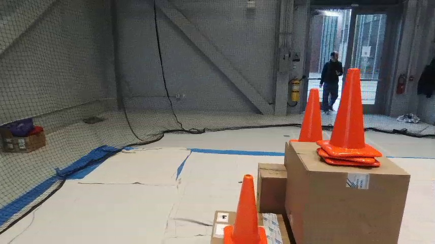
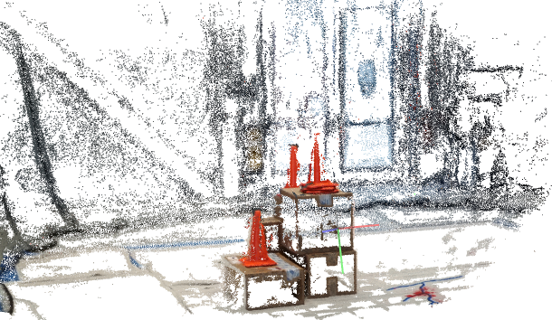
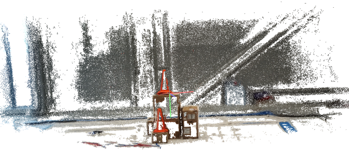

Deep Multi-Agent RL for 3D reconstructionA fun project comprising of drones using Reinforcement Learning (RL) to map an object in 3D space while working in coordination. |

|
TL;DRThis project is about using drones (small portable machines) to map an object, while working in coordination. Working together, reinforcement learning is used to autonomously instruct drones to prioritize areas unexplored by other drones. In this way, an even coverage of the object in question is achieved. Meanwhile a central server tries to stitch-together the images for 3D reconstruction, determines coverage, and learns the RL model. This project has potential applications in mapping or surveying locations or objects, especially where human access is hard e.g. cell-tower inspection, bridge inspection, fast ground surveying. Code Link: github.com/AllenIverSunn/MARL_3d_recon IntroductionControlling drones without human intervention is a complex task because it involves accurate real-time decision making, especially in the multiple drones case. To coordinate the drones, we use multi-agent reinforcement learning algorithm. Model parameters are stored on the overall control server, and drones provide real-time information back to the server while the server sends back the decision. Multiple agents share the same parameters. 3d reconstruction is performed using pictures taken by drones. In short, the project follows the pipeline below:
Motivation3D reconstruction is getting more and more popular in research and industrial circles as the field of computer vision and graphics matures. To build a model of an object, sufficient amount of pictures with overlaps are required. In its essence, a 3D model combines information from all those images and reduces redundancy and makes it easier for humans to process the information. This concise information model comes in very handy when quick time-response in required (e.g. fire rescue missions). Thus, the idea of reconstructing a 3D model using pictures taken by drones becomes promising. Most drones accomplish their tasks controlled by humans, which is expensive and error-prone. To address this problem, we apply multi-agent reinforcement learning algorithm to control multiple drones such that the drones can coordinate with each other and scan the object automatically. The reporting of disaster incidents usually relies on information collection from authorities which is considered to be expensive. These disaster situation reports often fail to provide actionable information to incident response team ahead of time. There are very few existing incident response frameworks that take into account of the known valuable information. Additionally, this information can be supplemented by drones taking pictures or videos from the disaster scene. 3D scanning can help localize disaster situations such as fire inside building structures and can help plan and organize search and rescue missions. In this project, we are working towards forming a team of drones that could form a real-time 3D map of the location so that we have actionable and fine grained information about the area. About the DroneWe are using Parrot Bebop2 drone for the purpose of this project. It is equipped with 14 megapixel camera with fish-eye lens for capturing images, Quad core GPU and 8 GB flash memory. It is capable of flying, filming and taking photographs both indoors and outdoors which will be very useful for our 3D reconstruction. In addition to its technical specifications, our drone also has the following sensors on board:
BackgroundHumans usually tend to perceive lot of information about any three-dimensional structure by just moving around it. As mentioned earlier, using human agents is very slow and burdensome to personnel who might be better served elsewhere, whereas drones are readily accessible and non-intrusive if used with caution. Deep Reinforcement LearningA typical characteristic of Reinforcement Learning is the interaction with the environment. An RL agent learns to behave according to the reward feedback given by the environment after taking an action. However, to train an agent in the real settings is expensive and dangerous. Deep learning has had a significant impact on many areas in machine learning improving the state of the art in tasks such as object detection, speech recognition, and language translation. Recently, deep learning has been combined with reinforcement-learning to solve problems. Most prominent is the recent use of a deep Q-network(DQN) in Q-learning. Implementing deep learning architecture such as deep neural networks with reinforcement learning creates a powerful model that is capable to scale to previously unsolvable problems. DRL has many applications in various domains such as healthcare, robotics, smart grids and finance. 3D ReconstructionMuch has been accomplished in the area of 3D reconstruction. We intend to address the speed of collection of image data for 3D reconstruction and the intensity of the 3D model. One of the relevant techniques used to reconstruct an object from the 2D images is Structure from Motion (SfM). While mostly used in geosciences as a method of bringing down the costs of topographic surveying, SfM provides a necessary tool set to recreate a scene or object from a collection of images. Structure from Motion can produce point cloud based 3D models similar to that of a LiDAR. This technique could be used for creating a high resolution digital surface or elevation models. SfM is based on the same principles as stereoscopic photogrammetry. In stereo phogrammetry, triangulation is used to calculate the relative 3-D positions (x,y,z,) of objects from stereo pairs. Common points are identified in each image. A line of sight or ray can be constructed from the camera location to the point on the object. The intersection of these rays (triangulation) determines the three-dimensional location of the point. 
To find feature points between the images, corner points such as the edges with gradients in multiple directions are tracked from one image to the next. One of the most widely used feature detection methods is the scale-invariant feature transform (SIFT). SIFT algorithm in computer vision detects and describes local features in images. It uses the maxima from a difference-of-Gaussians (DOG) pyramid as features. A dense point cloud of the area is then determined using the known camera parameters and the feature points from different angled images. Policy Gradient AgentTo solve this problem, we have considered many reinforcement learning models. Value-based models aims at maximizing the value function so that the agent can find an optimal path through all the states and get the maximum reward. However, value-based model need more a neural network to represent the value function and a policy, which could be a neural network as well. These methods have a great amount of parameters which will take a tremendous number of episodes to train. Instead, policy networks have less parameters and can map the state directly to actions. PretrainingPretraining is a technique that has been commonly used in computer vision, natural language processing and many other machine learning areas. It is a term used in transfer learning, in which the model is trained on the source distribution while it is tested in a different distribution and the process to train the model on source distribution is called pretraining.   In our system, pretraining plays a different role from the aforementioned works. It no longer tries to learn extract features from data, instead it learns the rules of the environment. To illustrate, the agent is supposed to learn the following things:
The first three can be regarded as rules, which are not related to the images. Thus, to reduce the time for training the agent, we divide the training phase into two steps. First, train the agent on a grid world environment. This grid environment is very simple. The training on this simplified environment is very fast and it takes only seconds to train 10,000 episodes. The agent learns the first three rules during the training on the simplified environment and it will perform well if it is deployed on a real environment or in the real settings, which means the process guarantees a baseline of the performance of the agent. The second step is to deploy this pretrained agent in the simulator to generate results. Training in this way is much faster than directly training the agent with zero prior knowledge of the environment in the simulator.     Performance EvaluationWe are evaluating our performance on two fronts. For one, we run the model in the simulator to test the overall performance of the framework. Then we deploy it on real drones to run in real world. Evaluation in SimulatorThe simulation is run on Airsim, a simulator for drones and cars built on Unreal Engine developed by Microsoft. A house is put into the simulator and drones are put around the house in the beginning. In the simulator, the camera of the drone is facing upfront horizontally and high-resolution images can be directly obtained through interacting with the simulator using program. The metrics that will be used to evaluate the model is the total reward of an episode and the length of the episode. Total reward of an episode is how well an agent can perform during a single episode and the more it gets, the better the performance is. As for length of episodes, generally speaking, the longer it is, the more reward the agent will get, however, in our problem it is quite so because visiting a grid too many times will induce a negative reward. Furthermore, to test if pretraining does any good to the process, we compared pretrained model and non-pretrained one. Evaluation in Real SettingsTo see if the framework really works, we deploy it in the real world. Two drones are used to collect pictures of a pile of boxes. The experiments were conducted in the Drone Lab in Richard Weeks Hall of Engineering in Rutgers University-New Brunswick. Due to the limitation of the number of drones we possess, only two are used. The boxes are simplified to four faces and the drones are deployed at two adjacent faces. Because the drone's camera is facing down by 45 degrees, thus, before starting running the RL algorithm, the drone has to be elevated by a small distance so that it gets some view of the object at the starting point. Furthermore, the size of the grid and the length of one gird also need to be determined. Here in our settings, we define a 3 by 3 grid world with 0.5 meters as the length of each grid. There are 20 images in total that are collected by the drone. It can be seen from the 3D map that the 3D reconstruction is good, which means both data collection part and 3D reconstruction part works well. Though there are a lot of blanks in the 3D map, the texture and color can tell that this is a 3D model of the experiment environment. Digging deeper into the blank space in the 3D map, the 3D reconstruction algorithm first extracts feature points from the pictures and areas of walls and floors are regarded as featureless and this is the reason there are so many blanks. |